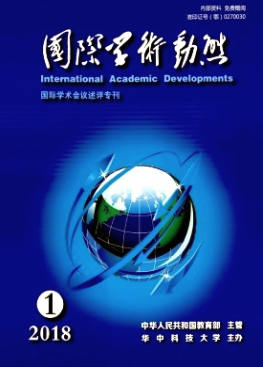

收录于合集
“全球转型”一 中国学者的回应 (The Global Transformation: Chinese Responses ) 中英双边会议于2016 年 12 月 3 日在浙江大学召开。此次会议由浙江大学公共管理学院政治学系主办，邀请国内外知名学者共话全球转型，旨在把握全球转型的历史脉络及未来走向，提升中国在国际社会中的战略地位与作用。
会议由浙江大学公共管理学院政治学系副教授崔顺姬负责并担任会议主持。与会学者包括伦敦政治经济学院的巴里·布赞教授和乔治·劳森教授，以及来自北京大学 、复旦大学、吉林大学 和浙江大学的 8 位专家学者，共计10人，收到中国学者的论文及摘要 5 篇。与会学者围绕巴里·布赞和乔治·劳森的著作《全球转型：历史、现代性与国际关系的形成》展开了热烈而深入的讨论，并同意在有关期刊上发表专栏文章。
本次会议共有 8 位学者发言，内容包括对《全球转型：历史、现代性与国际关系的形成》一书的回顾与点评以及全球转型对中国的启示。本书的两位作者，伦敦经济学院的巴里·布赞教授和乔治·劳森教授分别对书中主要内容作了回顾总结。巴里·布赞教授指出，长期以来，国际关系的研究将威斯特伐利亚体系作为起点，将两次世界大战、冷战的开始和结束等等重大事件作为国际关系的标志性时间节点，关注和平与战争、权力格局等而很少注意甚至基本忽视了国际体系的整体性与关联性。事实上，十九世纪发生的全球转型，对当今国际关系的主要特征有着深远的影响。全球转型中出现的一系列复杂建构：工业化、理性国家建设和“进步”的意识形态重塑了权力模式 ( mode of power) ，并在不均衡的全球化进程中带来了国家之间的权力鸿沟，“无中心的多元世界”让位于“中心一边缘”的世界格局，西方国家在其中获得了全面的优势。此外，诸多的国际行为体也由此生成：理性民族国家、跨国公司、政府间国际组织与非政府组织，它们已经成为国际事务的主要参与者。一言以蔽之，我们今天所熟知的全球性结构和国际行为体，实际上是“漫长的十九世纪”中全球转型的产物。而当今，这一“中心一边缘”的世界格局正在经历又一转型，即走向“去中心”的世界格局。然而，国际关系学科对此的关注严重不足。《全球转型：历史、现代性与国际关系的形成》正是成书于对这种整体性忽视的担忧之中。该书认为，我们仍然并可能仍将长期处于一个被十九世纪的全球转型所定义的世界之中，如果不对全球转型之重大意义进行深刻的考察，也就不能真正理解国际关系本身及其主题。
乔治·劳森教授对书中的主要观点进行了阐释。该书认为，全球转型最关键的 3 个组成要素在于工业化、理性国家建设以及“进步”的意识形态。其中，两次工业化浪潮改变了权力的模式及来源， 理性国家塑造了今日世界的基本形态，而包括帝国主义、“科学”种族主义、民族主义等在内的“进步”意识形态则塑造了文明的标准，勾画出“文明”与“蛮族”两个世界的分野。十九世纪的一系列深刻变化是史无前例的，人类社会第一次在如此短的时间内经历如此彻底的权力变化。全球转型中所孕育的现代性，将社会资源引入权力模式之中，至此权力不再仅仅与实体资源划等号。总而言之，十九世纪中涌现的深刻变革，塑造了当今世界的基本面貌。
由此，国际关系学科有必要对自身重新加以审视。对于两位学者提出的全球转型中的三大动因及其影响，以及现代性与权力模式这一新颖的命题，中国学者给出了热烈的回应与讨论。来自复旦大学的任晓教授高度赞赏书中所使用的历史分析方法，认为历史是国际关系的重要基础。然而，在实证主义的影响之下，历史仅仅被用作检验假设的工具。因而，本书所使用的宏观历史分析实属难得，也可见两位作者功底之深。任晓教授在发言中也对两位作者提出了问题：1. 亚洲的国际体系与世界其他地区有着根本的区别，因而有必要进一步研究国际体系在这一地区究竟是如何运转的；2. 十九世纪的全球转型要素在今天是否又有了新的变化；3. 随着新兴国家的崛起，国际体系又在经历着怎样的变革，特别是中美之间的角色关系是否可能发生逆转。
吉林大学刘德斌教授与颜震博士也注意到书中所使用的历史分析方法，并认为其对整个国际关系学科的研究具有里程碑式的意义。此外，书中对国际关系的一些重要概念，诸如全球现代性、权力模式、 时间节点、基本制度以及国际秩序的历史演进等，给出了新的理解和解释。尤其值得注意的是，书中将全球现代性的发展过程划分为3个历史时期、西方殖民时期、西方全球时期，去中心化时期。当今中国正同时经历着工业化、理性国家建设与意识形态的重塑，其变革之广甚至为过去西方所不及。那么，新一轮的全球现代性的发展将会呈现怎样的特征呢？
来自浙江大学的王江丽博士表示，《全球转型：历史、现代性与国际关系的形成》给自己留下了 3个深刻的印象：1. 书中批评国际关系学科本身缺乏坚实的历史基础，而这一批评也同样适用于中国的国际关系学科。中国的大国崛起态势已经为世界所公认，但问题在于中国将以怎样的方式崛起，在世界社会中扮演怎样的角色。对于这一间题，不仅外界充满了好奇乃至质疑，中国自身也并未做好充分的准备。要回应乃至解决这个难题，必须重新关照历史，理解过去；2.“中心一边缘”国际权力架构的形成和当前“去中心化”趋势的出现是本书最引人注目的亮点。借用本书作者提出的全球转型三大动因（工业化、理性国家和“进步”意识形态），或许可以尝试来回答中国现代性发展道路中的一个难题：除了战争和内乱的原因，中国的现代化道路何以如此艰难而漫长？对西方国家来说，其现代性发展所面临的挑战只是一维的，而中国却遭遇着“古”与“今”、“中”与“西”的双重挑战。现代性三大动因之间的交互牵引在中国的发展历程中尤为明显；3. 崛起的中国将有怎样的自我定位，又将如何参与世界？王江丽博士认为，答案或许是中西合璧、积极融入。
北京大学张小明教授开篇即言明《全球转型：历史、现代性与国际关系的形成》颇不寻常， 值得中国学者的注意。其一，该书的特色之一在于对历史研究的重视。本书的研究主题是十九世纪的全球转型，即所谓“现代性”的生成问题，它涉及经济、政治意识形态等诸多方面，是一种大历史研究；其二，本书采用跨学科的研究方法，涉及历史学、经济学、哲学社会学、国际关系学等多门学科的知识，与传统的国际关系学著作大为不同；其三，本书的主题具有超越性。书中传统的国际关系主题，即国家之间的战争与和平问题，基本上没有被讨论，而将核心置于十九世纪的全球转型，探究的是工业化、理性国家建构与意识形态问题。总而言之，这本书对于国际关系学科的发展具有十分重要的意义，有望给国际关系学者带来新的思想启发。与此同时，从现实的角度来看，由于中国曾在十九世纪的“未有之变局”中经历巨大的挫折和痛苦，其对全球转型及其建构起的“现代性”之认知可能是负面的。随着中国的崛起，中国是否会对十九世纪以来的世界发展进程表现出越来越多的不满，乃至产生重塑世界格局的愿望？张小明教授认为，未来中国和国际社会的紧张关系很可能会持续存在，而这将在很大程度上影响未来国家关系的发展。
浙江大学崔顺姬博士认为，《全球转型：历史、现代性与国际关系的形成》一书中所强调的“去中心的全球主义”对于理解当今的全球转型具有重要意义。同时，崔顺姬博士也提出了自己的疑问：1. 从全球化的现状和中国的国情出发，尽管广大沿海城市已经高度融入全球化之中，但中部和边陲地带仍处于较为封闭的状态，由此引申出了一个问题即世界是否真的相互关联？2. 现代性的发展对国际体系究竟造成了怎样的影响？传统的现代化模式所内生的不平等与不可持续性，已经在中国学者中引起广泛讨论，中国所倡导的“包容性发展”正是超越传统现代化模式的一种新尝试；3. 当今全球所遭遇的真正挑战，或许并不是源于以中国为代表的非西方国家的崛起，而在于其发展模式本身的问题。那么，中国的“一带一路”则可能提供了一种新的选择，如若能成功实施，有望对全球发展模式作出贡献。
在讨论环节，浙江大学政治学系余逊达教授特别指出，本书与以往国际关系著作的最大不同在于并不将研究聚焦于战争与和平问题，而是将“现代性”突显为看待国际关系发展和变化的主要依据，是一个全新的视角。那么现代性、全球化和国际秩序构成怎样的互动关系？西方的崛起是在一个现代化推动着全球化的背景下实现的，而今天中国的崛起则是在深度全球化推动现代化的背景下展开，这种发展脉络上的根本差异会不会给中国的崛起带来特殊的挑战？这些都是值得中外学者深思的问题。
总体而言，各位学者的回应一方面肯定了该书使用的研究方法、提出的新概念以及对全球发展作出的重新解释，认为其对我们深刻理解当今国际关系的基本特征以及国际关系学科的发展都有至关重要的意义。同时，学者们基于中国的历史经验，对传统的全球化及现代化模式提出了反思，并就现代性的真正含义与影响、国际秩序的演进与趋向等展开了深入的讨论。
巴里·布赞和乔治·劳森的著作《全球转型：历史、现代性与国际关系的形成》将十九世纪的历史引入台前，探讨了国际秩序形成和转烈的动因，为我们理解当今全球转型的历史脉络提供了一种有意义的视角。本次研讨会上中英学者汇聚一堂，通过直接而深入的交流对话，探究了全球转型的历史脉络和发展趋向，分析了中国崛起对于国际秩序的影响，讨论了在全球转型背景下中国如何更好地建设以互利共赢为核心的新型国际关系。我们相信这对于中国更好应对全球转型带来的挑战，抓住战略机遇，在国际秩序建构中发挥更加建设性的作用，推动国际秩序朝着更加公正合理的方向发展具有重要的理论意义和实践意义。同时，通过本次会议，我们也进一步加强了浙江大学与英国伦敦经济学院、北京大学、复旦大学、吉林大学等国内外知名学府的交流往来，促进了国际关系领域的学术研究与发展，并在我国提升学术地位与国际影响力之路上迈出了坚 实的一步。
来源：袁辛雨、施榕：《“全球转型”——中国学者的回应》，《国际学术动态》2018年第1期，第20-22页。

**
**
**
**
**
**
添加 “国小政”微信
获取最新资讯